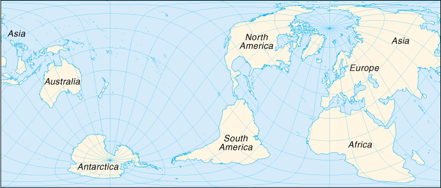

| World |
|
|  | |
| Geography |
Map references: World, Time Zones
Area:
total:
510.072 million sq km
land:
148.94 million sq km
water:
361.132 million sq km
note:
70.8% of the world's surface is water, 29.2% is land
Area - comparative: land area about 16 times the size of the US
Land boundaries: the land boundaries in the world total 251,480.24 km (not counting shared boundaries twice)
Coastline: 356,000 km
Maritime claims:
contiguous zone:
24 nm claimed by most, but can vary
continental shelf:
200-m depth claimed by most or to depth of exploitation; others claim 200 nm or to the edge of the continental margin
exclusive fishing zone:
200 nm claimed by most, but can vary
exclusive economic zone:
200 nm claimed by most, but can vary
territorial sea:
12 nm claimed by most, but can vary
note:
boundary situations with neighboring states prevent many countries from extending their fishing or economic zones to a full 200 nm; 43 nations and other areas that are landlocked include Afghanistan, Andorra, Armenia, Austria, Azerbaijan, Belarus, Bhutan, Bolivia, Botswana, Burkina Faso, Burundi, Central African Republic, Chad, Czech Republic, Ethiopia, Holy See (Vatican City), Hungary, Kazakhstan, Kyrgyzstan, Laos, Lesotho, Liechtenstein, Luxembourg, Malawi, Mali, Moldova, Mongolia, Nepal, Niger, Paraguay, Rwanda, San Marino, Slovakia, Swaziland, Switzerland, Tajikistan, The Former Yugoslav Republic of Macedonia, Turkmenistan, Uganda, Uzbekistan, West Bank, Zambia, Zimbabwe
Climate: two large areas of polar climates separated by two rather narrow temperate zones from a wide equatorial band of tropical to subtropical climates
Terrain: the greatest ocean depth is the Mariana Trench at 10,924 m in the Pacific Ocean
Elevation extremes:
lowest point:
Dead Sea -408 m
highest point:
Mount Everest 8,850 m (1999 est.)
Natural resources: the rapid using up of nonrenewable mineral resources, the depletion of forest areas and wetlands, the extinction of animal and plant species, and the deterioration in air and water quality (especially in Eastern Europe, the former USSR, and China) pose serious long-term problems that governments and peoples are only beginning to address
Land use:
arable land:
10%
permanent crops:
1%
permanent pastures:
26%
forests and woodland:
32%
other:
31% (1993 est.)
Irrigated land: 2,481,250 sq km (1993 est.)
Natural hazards: large areas subject to severe weather (tropical cyclones), natural disasters (earthquakes, landslides, tsunamis, volcanic eruptions)
Environment - current issues: large areas subject to overpopulation, industrial disasters, pollution (air, water, acid rain, toxic substances), loss of vegetation (overgrazing, deforestation, desertification), loss of wildlife, soil degradation, soil depletion, erosion
| People |
Population: 6,080,671,215 (July 2000 est.)
Age structure:
0-14 years:
29.92% (male 932,832,913; female 885,970,165)
15-64 years:
63.17% (male 1,942,402,264; female 1,898,479,062)
65 years and over:
6.91% (male 184,072,470; female 235,017,660) (2000 est.)
Population growth rate: 1.3% (2000 est.)
Birth rate: 22 births/1,000 population (2000 est.)
Death rate: 9 deaths/1,000 population (2000 est.)
Sex ratio:
at birth:
1.05 male(s)/female
under 15 years:
1.05 male(s)/female
15-64 years:
1.02 male(s)/female
65 years and over:
0.78 male(s)/female
total population:
1.01 male(s)/female (2000 est.)
Infant mortality rate: 54 deaths/1,000 live births (2000 est.)
Life expectancy at birth:
total population:
64 years
male:
62 years
female:
65 years (2000 est.)
Total fertility rate: 2.8 children born/woman (2000 est.)
| Government |
Data code: none; there is no FIPS 10-4 country code for the World, so the Factbook uses the "W" data code from DIAM 65-18 "Geopolitical Data Elements and Related Features," Data Standard No. 3, March 1984, published by the Defense Intelligence Agency; see the Cross-Reference List of Country Data Codes appendix
Administrative divisions: 267 nations, dependent areas, other, and miscellaneous entries
Legal system: all members of the UN (excluding Yugoslavia) plus Switzerland are parties to the statute that established the International Court of Justice (ICJ) or World Court
| Economy |
Economy - overview: Growth in global output (gross world product, GWP) rose to 3% in 1999 from 2% in 1998 despite continued recession in Japan, severe financial difficulties in other East Asian countries, and widespread dislocations in several transition economies, notably Russia. The US economy continued its remarkable sustained prosperity, growing at 4.1% in 1999, and accounted for 23% of GWP. Western Europe's economies grew at roughly 2%, not enough to cut deeply into the region's high unemployment; the EU economies produced 20% of GWP. China, the second largest economy in the world, continued its strong growth and accounted for 12% of GWP. Japan grew at only 0.3% in 1999; its share in GWP is 7%. As usual, the 15 successor nations of the USSR and the other old Warsaw Pact nations experienced widely different rates of growth. The developing nations varied widely in their growth results, with many countries facing population increases that eat up gains in output. Externally, the nation-state, as a bedrock economic-political institution, is steadily losing control over international flows of people, goods, funds, and technology. Internally, the central government often finds its control over resources slipping as separatist regional movements - typically based on ethnicity - gain momentum, e.g., in many of the successor states of the former Soviet Union, in the former Yugoslavia, in India, and in Canada. In Western Europe, governments face the difficult political problem of channeling resources away from welfare programs in order to increase investment and strengthen incentives to seek employment. The addition of 80 million people each year to an already overcrowded globe is exacerbating the problems of pollution, desertification, underemployment, epidemics, and famine. Because of their own internal problems and priorities, the industrialized countries devote insufficient resources to deal effectively with the poorer areas of the world, which, at least from the economic point of view, are becoming further marginalized. Continued financial difficulties in East Asia, Russia, and many African nations cast a shadow over short-term global economic prospects. The introduction of the euro as the common currency of much of Western Europe in January 1999, while strengthening prospects for an integrated economic powerhouse, poses serious economic risks because of varying levels of income and cultural and political differences among the participating nations. (For specific economic developments in each country of the world in 1999, see the individual country entries.)
GDP: GWP (gross world product) - purchasing power parity - $40.7 trillion (1999 est.)
GDP - real growth rate: 3% (1999 est.)
GDP - per capita: purchasing power parity - $6,800 (1999 est.)
GDP - composition by sector:
agriculture:
NA%
industry:
NA%
services:
NA%
Household income or consumption by percentage share:
lowest 10%:
NA%
highest 10%:
NA%
Inflation rate (consumer prices):
all countries 25%; developed countries 1% to 3% typically; developing countries 5% to 60% typically (1999 est.)
note:
national inflation rates vary widely in individual cases, from stable prices in Japan to hyperinflation in a number of Third World countries
Labor force: NA
Labor force - by occupation: agricultue NA%, industry NA%, services NA%
Unemployment rate: 30% combined unemployment and underemployment in many non-industrialized countries; developed countries typically 4%-12% unemployment (1999 est.)
Industries: dominated by the onrush of technology, especially in computers, robotics, telecommunications, and medicines and medical equipment; most of these advances take place in OECD nations; only a small portion of non-OECD countries have succeeded in rapidly adjusting to these technological forces; the accelerated development of new industrial (and agricultural) technology is complicating already grim environmental problems
Industrial production growth rate: NA%
Electricity - production: 12,342.7 billion kWh (1994)
Electricity - production by source:
fossil fuel:
NA%
hydro:
NA%
nuclear:
NA%
other:
NA%
Electricity - consumption: 12,342.7 billion kWh (1994)
Exports: $5.6 trillion (f.o.b., 1999 est.)
Exports - commodities: the whole range of industrial and agricultural goods and services
Exports - partners: in value, about 75% of exports from the developed countries
Imports: $5.6 trillion (f.o.b., 1999 est.)
Imports - commodities: the whole range of industrial and agricultural goods and services
Imports - partners: in value, about 75% of imports by the developed countries
Debt - external: $2 trillion for less developed countries (1999 est.)
Economic aid - recipient: traditional worldwide foreign aid $50 billion (1997 est.)
| Communications |
Telephones - main lines in use: NA
Telephones - mobile cellular: NA
Telephone system:
domestic:
NA
international:
NA
Radio broadcast stations: AM NA, FM NA, shortwave NA
Radios: NA
Television broadcast stations: NA
Televisions: NA
Internet Service Providers (ISPs): 13,119 (1999)
| Transportation |
Railways:
total:
1,201,337 km includes about 190,000 to 195,000 km of electrified routes of which 147,760 km are in Europe, 24,509 km in the Far East, 11,050 km in Africa, 4,223 km in South America, and 4,160 km in North America; note - fastest speed in daily service is 300 km/hr attained by France's Societe Nationale des Chemins-de-Fer Francais (SNCF) Le Train a Grande Vitesse (TGV) - Atlantique line
broad gauge:
251,153 km
standard gauge:
710,754 km
narrow gauge:
239,430 km
Highways:
total:
NA km
paved:
NA km
unpaved:
NA km
Ports and harbors: Chiba, Houston, Kawasaki, Kobe, Marseille, Mina' al Ahmadi (Kuwait), New Orleans, New York, Rotterdam, Yokohama
| Military |
Military expenditures - dollar figure: aggregate real expenditure on arms worldwide in 1999 remained at approximately the 1998 level, about three-quarters of a trillion dollars (1999 est.)
Military expenditures - percent of GDP: roughly 2% of gross world product (1999 est.)